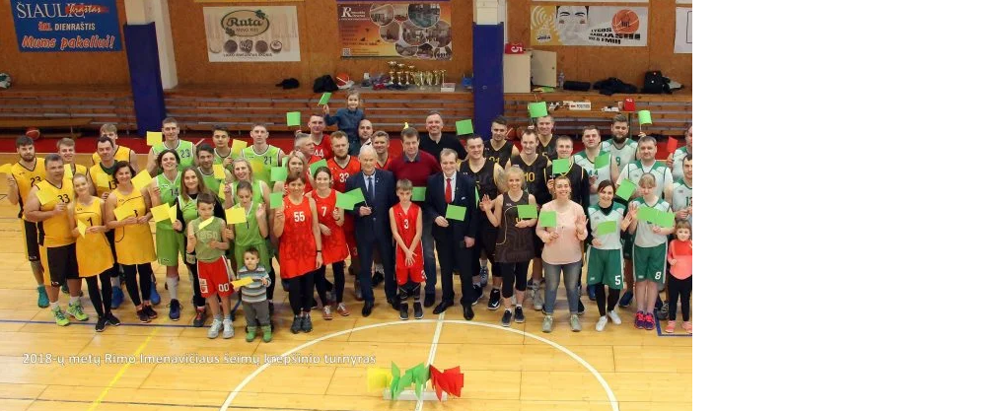
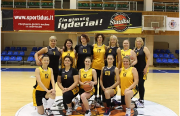

Nuo 2007 m. Krepšinio klubas „Skriejantis kamuolys“ vienija šeimas žaisti krepšinį, aktyviai leisti laiką, plėsti akiratį formuoti aktyvią šeimų bendruomenę, socialiai atsakingus, aktyvius, pilietiškus visuomenės narius.
Krepšinio klubas „Skriejantis kamuolys“ suvienija šeimas, sujungia kartas, išsaugo bendrystę, kuria šeimos vertybes.
Nuo 2017 m. Krepšinio klubas „Skriejantis kamuolys“ vienija moteris, norinčias žaisti krepšinį bei aktyviai leisti laiką, skatina moterų fizinį aktyvumą ir bendrystę.
Nuo 2018 m. suburta Šiaulių moterų krepšinio komanda „Sunflowers“ vienija skirtingo amžiaus moteris, kurios dalyvauja Lietuvos ir Europos veteranų krepšinio turnyruose (35+, 40+, 45+).
Moterų komanda aktyviai dalyvauja savanoriškose veiklose, pažintinėse išvykose bei suburia savo šeimas aktyviai leisti laisvalaikį kartu.
Daugiau apie moterų krepšinio komados veiklą
